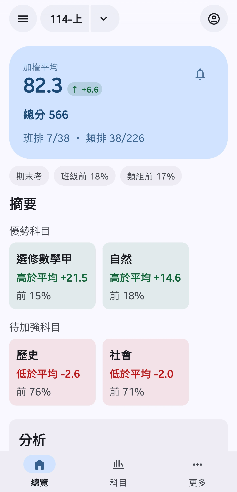
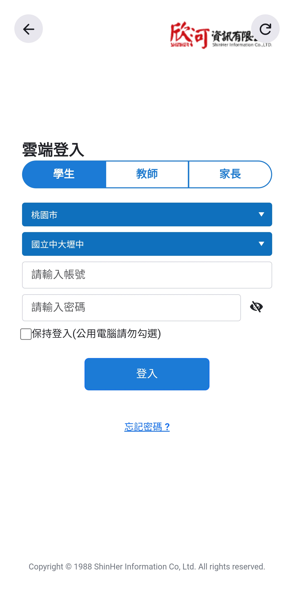
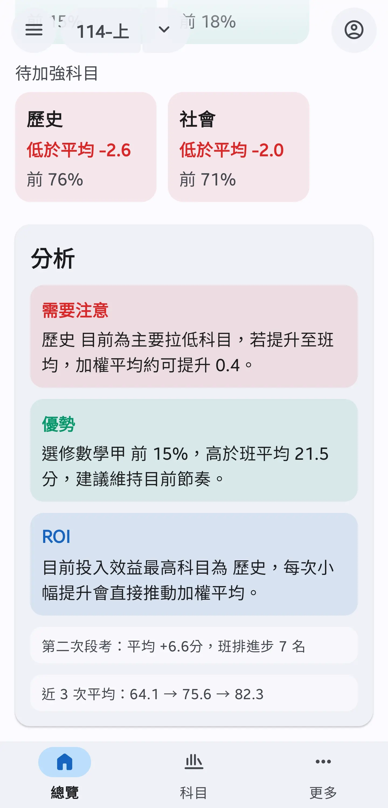
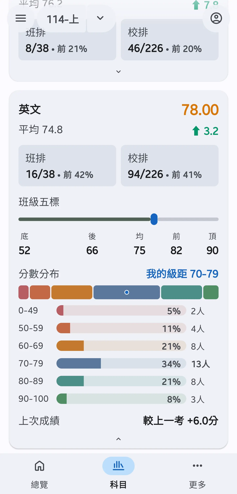
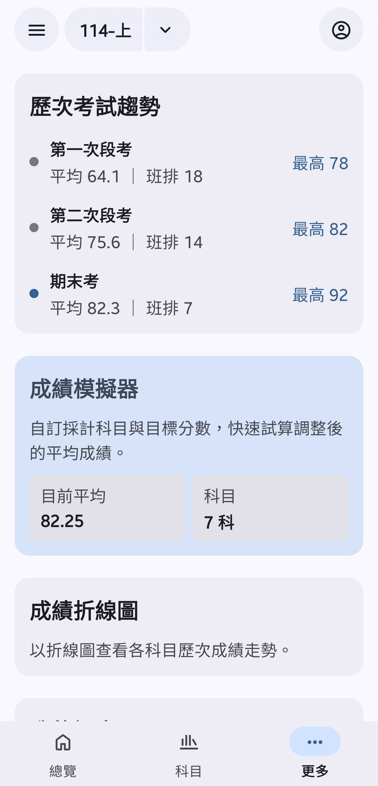
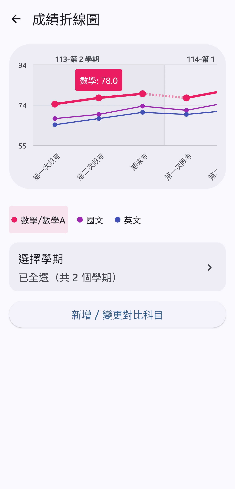
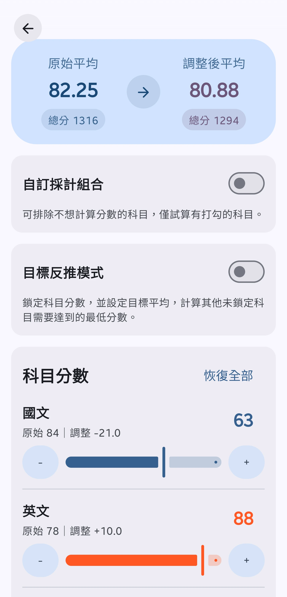
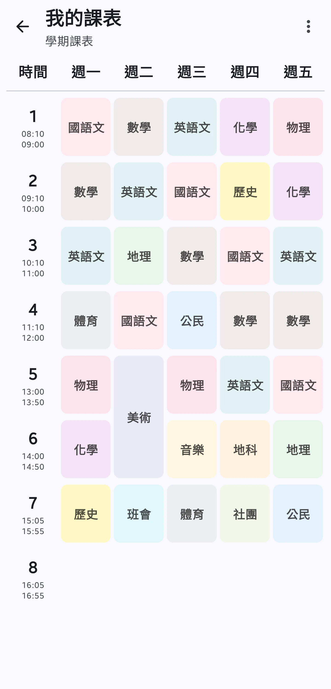

內嵌學校系統登入頁面，登入快速且便利。
加權平均、班排、類排、百分比，搭配優勢與待加強科目摘要。

基於成績走勢提供個人化的學習建議，幫助你精準掌握強弱項，規劃未來的讀書方向。

各科成績與班平均的差距、五標落點、分數分布，還有與上次考試的比較。

自動比對同學期歷次考試，清楚看到平均與排名的變化趨勢。

透過折線圖直觀呈現各科成績走勢，支援多科目同時比較，成績起伏一目了然。

拖動滑桿調整各科分數，即時計算調整後的加權平均，規劃你的讀書策略。

隨時隨地查看每日課表，掌握上課節次與科目。
持續開發增加中，敬請期待...
你的密碼只在登入時使用，不會被儲存在任何地方。
App 不會連線到任何我們維護的伺服器，只會直接與欣河系統連線抓取資料。
所有的成績資料與分析都在你的手機本機端直接處理，絕不備份或上傳至雲端。
登出時自動清除本機 session 資料，不留痕跡。
不是。壢中 Pocket 是學生獨立開發的非官方第三方 App，與壢中及欣河智慧校園平台無任何直接關聯。
App 不會讀取或保存你輸入的密碼；帳號密碼由內嵌的學校登入頁面透過 HTTPS 直接送到校務系統。登入成功後，App 會取得學號與查詢所需的登入狀態保存在你的裝置上，不會傳送給開發者。
為維持登入，App 會在手機上保存學號、Cookies 與驗證權杖，並使用 Android 系統金鑰加密。啟用生物辨識時會再以 PIN 與硬體金鑰保護；啟用段考提醒功能時會另存最長 48 小時的加密臨時登入狀態。登出會清除這些 Session 資料。
成績、課表、姓名、班級、座號與學號只在你的手機和學校系統之間處理，不會傳送到開發者伺服器，開發者也無法從 App 遠端查看。App 可能會將不包含上述個人資料的功能使用事件與計數傳送至 Firebase Analytics，用於了解功能使用情況與改善 App，且不會設定可識別個人的使用者 ID。
App 會優先顯示上次成功查詢的本機快取，因此不保證是最新資料。請在成績頁下拉重新整理，即可略過快取並向學校系統查詢。
這些資料均來自學校系統回傳的同一份成績資料，App 僅負責整理、計算落點與繪製圖表。